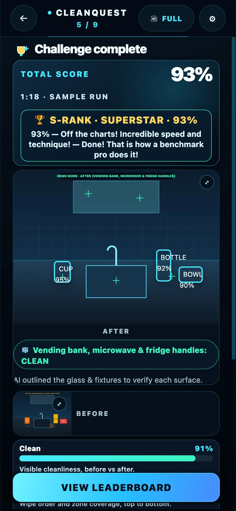
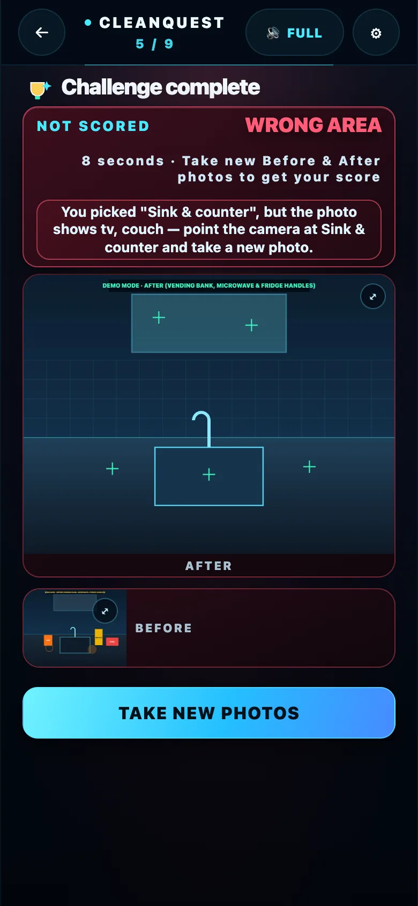

Wrong area, person in photo, too dark, glare, camera moved, too far, or no change. Each refusal names one reason and offers a retake — never a silent failure and never a guessed number.
Evaluation case study
Evals, run
like a product.
A worked example from CleanQuest, the AI verification product I designed and shipped solo: the evaluation task, the rubric, the confidence gate, a live two-provider judge run, and the refusal path for inputs that deserve no score. Every number on this page comes from the product's own configuration or its logged verification run. Where the evidence is thin, the page says so — starting here: the one logged run graded a procedurally drawn demo scene, not a photograph, and it is labeled that way wherever it appears.
Method: success criteria first → rubric & confidence gate → refusal taxonomy for unusable inputs → logged judge run → artifacts published with the page. What the method still owes — a human-labeled validation set — is named at the bottom, not skipped.
The evaluation task
Grade the pair.
Or refuse.
The judge receives a before-and-after image pair of a work surface and returns a vision scorecard: per-surface grades, per-object detections with confidences, and one composite score. The eval is designed around a single product requirement — a score the system can stand behind, or an explicit refusal. A confident number on a bad photo is the worst output this system can produce, because crews act on the score.
The rubric
What gets scored,
and how much it counts.
| Component | Weight | How it is measured |
|---|---|---|
| Clean | 50% | Visible cleanliness, before vs. after. Computed on-device by spot type: surface 55%, zones 25%, items 20%. |
| Technique | 25% | Wipe order and zone coverage, top to bottom. |
| Time | 25% | Run duration against the benchmark for the spot type. A benchmark time is not a certification. |
| Surface grades | — | Cloud review grades each surface clean / partly clean / missed. A grade counts as verified only at model confidence ≥ 0.6; below that it displays as unverified. |
| On-device layer | — | MediaPipe EfficientDet-Lite0 and Pose Landmarker Lite, with 96×72 edge analysis and a 3×3 luminance-zone check — runs with no signal, before any cloud review. |
The live run
Two judges.
Same input. Δ2 points.
On Nov 4, 2026, one fixed demo pair — a procedurally drawn sink-and-counter scene (960×720 canvas, generated in code, not a photograph) — was graded live by two providers running the same judge model (Muse Spark Open, task: vision scorecard). Both calls are logged as verified, non-mock. This is a single-case verification run: n = 1.
| Provider | Role | Overall score | Tokens (in / out) | Status |
|---|---|---|---|---|
| Baseten | Primary | 98 / 100 | 1,405 (871 / 534) | Verified |
| Fireworks AI | Failover | 96 / 100 | 1,695 (866 / 829) | Verified |
Read these correctly: 98 and 96 are scores the model assigned — not accuracy rates. What the pair of runs actually proves is narrower and more useful: the primary path returns a valid, complete scorecard live, and the same model served by a second host lands within 2 points on identical input. That is a consistency smoke check — the cheapest judge check there is — not judge validation. Validation against human labels is a different artifact, and it does not exist yet (see below).

When the eval refuses
NOT SCORED is
a designed outcome.
The taxonomy is designed against the failure mode that matters most here: a confident score on an input that deserved none. Failure is a designed outcome, not an error state — a score the system can't stand behind teaches crews to distrust every score.
Nobody can edit a score — including me. The dispute path is a one-tap appeal, reviewed within 5 business days. The eval's integrity is the product's integrity.

The eval dataset
Dataset v0.1.
Status on every row.
A credible small eval is 20–50 real cases with provenance — this set is not there yet, and the table doesn't pretend otherwise. One case has been run; the refusal classes are designed and waiting on collected photo pairs.
| Case | Input | Source | Expected | Status |
|---|---|---|---|---|
| CQ-001 | Fixed demo before/after pair (sink & counter) | Procedurally drawn canvas scene — not a photograph | Score issued | Run — Nov 4, 2026: 98 / 96 |
| CQ-002 | Refusal case class: wrong area | Designed from the shipped refusal taxonomy | NOT SCORED — Wrong area | Designed — not yet run |
| CQ-003 | Refusal case class: person in photo | Designed from the shipped refusal taxonomy | NOT SCORED — Person in photo | Designed — not yet run |
| CQ-004 | Refusal case class: too dark | Designed from the shipped refusal taxonomy | NOT SCORED — Too dark | Designed — not yet run |
| CQ-005 | Refusal case class: glare | Designed from the shipped refusal taxonomy | NOT SCORED — Glare | Designed — not yet run |
| CQ-006 | Refusal case class: camera moved | Designed from the shipped refusal taxonomy | NOT SCORED — Camera moved | Designed — not yet run |
| CQ-007 | Refusal case class: too far | Designed from the shipped refusal taxonomy | NOT SCORED — Too far | Designed — not yet run |
| CQ-008 | Refusal case class: no change | Designed from the shipped refusal taxonomy | NOT SCORED — No change | Designed — not yet run |
The judge prompt
The exact prompt
the judge runs.
Published verbatim from the product code — an eval you can't inspect is an eval you can't trust. The response is validated before use: surface names restricted to a whitelist (counter, glass, floor, fixture), scores clamped 0–100, and a surface is flagged verified only when its confidence clears the 0.6 gate. Malformed output is rejected, not repaired.
CLOUD_SCORING_PROMPT — verbatim
You are the CleanQuest score verifier.
You receive two photos: BEFORE cleaning and AFTER cleaning.
Score only visible cleanliness and technique.
Never claim sanitation, disinfection, or certification.
Think briefly (<35 words). Respond with JSON ONLY, no other text, matching this schema:
{
"surfaces": [
{ "name": "counter|glass|floor|fixture", "score": 0-100,
"missed": [], "confidence": 0-1, "box_2d": [ymin, xmin, ymax, xmax] }
],
"overall": 0-100,
"verdict": "pass|retry",
"hype_line": "one celebratory hype sentence, at most 20 words"
}
The hype line celebrates the result. No cleaning advice,
no instructions, no coaching, no technique tips.
What is not claimed yet
The honest
missing pieces.
There is no human-labeled set, so there are no agreement rates, no TPR/TNR, no kappa on this page — any such number today would be invented. The 98-vs-96 pair is judge-vs-judge on one case, and it is labeled as exactly that.
One logged run is not a trend. A regression table needs the same dataset graded again after a prompt or model change — the dataset above is built so that comparison can exist.
Collect 20–50 real before/after pairs (including deliberate refusal triggers), label each by hand as the domain expert, grade them, and compare judge vs. labels. That single pass produces the dataset, the validation stats, and the first regression baseline — a weekend-sized eval, and the stated next step.
Governance is part of the rubric
Constraints the eval
has to enforce.
Three rules are product checks, not policy text: consent is read aloud before the before photo exists; faces are never identified (no facial recognition, no biometrics); and scores are never used for discipline or tied to money. Sponsors fund the product and have no say over scores or rankings. The moment money can move a score, the record is worthless in a dispute — so the eval, not a promise, is what keeps it that way.
This is the same evaluation discipline I set as launch gates for production agent systems at Ascension Health — quality standards agents had to meet before release, with evidence traceability and human-review paths — and the basis of the LLM Evaluation Audit I offer through Aladdin Studio. Full product story: the CleanQuest case study.